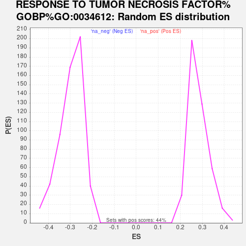

Profile of the Running ES Score & Positions of GeneSet Members on the Rank Ordered List
| Dataset | Combo_vs_Naive_Ranked_Genes |
| Phenotype | NoPhenotypeAvailable |
| Upregulated in class | na_pos |
| GeneSet | RESPONSE TO TUMOR NECROSIS FACTOR%GOBP%GO:0034612 |
| Enrichment Score (ES) | 0.6069658 |
| Normalized Enrichment Score (NES) | 2.1529331 |
| Nominal p-value | 0.0 |
| FDR q-value | 3.620551E-4 |
| FWER p-Value | 0.004 |
| SYMBOL | RANK IN GENE LIST | RANK METRIC SCORE | RUNNING ES | CORE ENRICHMENT | |
|---|---|---|---|---|---|
| 1 | CHI3L1 | 0 | 42.704 | 0.0562 | Yes |
| 2 | CXCL8 | 53 | 26.441 | 0.0877 | Yes |
| 3 | BIRC3 | 69 | 25.529 | 0.1203 | Yes |
| 4 | TNFRSF21 | 77 | 25.136 | 0.1529 | Yes |
| 5 | PTK2B | 85 | 24.820 | 0.1852 | Yes |
| 6 | TRAF1 | 108 | 24.165 | 0.2156 | Yes |
| 7 | STAT1 | 143 | 22.848 | 0.2434 | Yes |
| 8 | NPNT | 154 | 22.541 | 0.2725 | Yes |
| 9 | GBP1 | 205 | 21.451 | 0.2975 | Yes |
| 10 | ASAH1 | 210 | 21.330 | 0.3253 | Yes |
| 11 | BRCA1 | 279 | 19.848 | 0.3471 | Yes |
| 12 | ZFP36L1 | 334 | 18.819 | 0.3684 | Yes |
| 13 | GBP3 | 337 | 18.734 | 0.3929 | Yes |
| 14 | SPHK1 | 362 | 18.311 | 0.4154 | Yes |
| 15 | HAS2 | 370 | 18.236 | 0.4390 | Yes |
| 16 | TNFSF18 | 404 | 17.845 | 0.4604 | Yes |
| 17 | GBP2 | 422 | 17.572 | 0.4824 | Yes |
| 18 | CD58 | 431 | 17.421 | 0.5048 | Yes |
| 19 | PID1 | 535 | 16.215 | 0.5195 | Yes |
| 20 | ARHGEF2 | 607 | 15.362 | 0.5352 | Yes |
| 21 | ZC3H12A | 728 | 14.185 | 0.5461 | Yes |
| 22 | NFKBIA | 815 | 13.569 | 0.5585 | Yes |
| 23 | TNFRSF1B | 836 | 13.459 | 0.5749 | Yes |
| 24 | SELE | 980 | 12.436 | 0.5821 | Yes |
| 25 | CCL2 | 997 | 12.286 | 0.5972 | Yes |
| 26 | HYAL1 | 1086 | 11.714 | 0.6070 | Yes |
| 27 | ERBIN | 1805 | 8.209 | 0.5716 | No |
| 28 | TRADD | 1875 | 7.984 | 0.5776 | No |
| 29 | IGBP1 | 1912 | 7.868 | 0.5857 | No |
| 30 | HYAL3 | 1922 | 7.831 | 0.5954 | No |
| 31 | NR1D1 | 2523 | 5.988 | 0.5647 | No |
| 32 | AFF3 | 2606 | 5.768 | 0.5670 | No |
| 33 | JAK2 | 2613 | 5.757 | 0.5742 | No |
| 34 | NKX3-1 | 2808 | 5.338 | 0.5687 | No |
| 35 | TRIM32 | 2882 | 5.141 | 0.5708 | No |
| 36 | RIPK1 | 3069 | 4.719 | 0.5651 | No |
| 37 | CASP3 | 3097 | 4.665 | 0.5695 | No |
| 38 | IKBKB | 3170 | 4.538 | 0.5708 | No |
| 39 | CIB1 | 3526 | 3.835 | 0.5530 | No |
| 40 | TANK | 3529 | 3.833 | 0.5579 | No |
| 41 | ZFP36L2 | 3570 | 3.781 | 0.5603 | No |
| 42 | TNFRSF11A | 3716 | 3.529 | 0.5557 | No |
| 43 | SMPD1 | 3832 | 3.353 | 0.5527 | No |
| 44 | CASP8 | 4382 | 2.573 | 0.5207 | No |
| 45 | COMMD7 | 4645 | 2.262 | 0.5069 | No |
| 46 | ADAM10 | 4660 | 2.237 | 0.5089 | No |
| 47 | SLC22A5 | 4679 | 2.209 | 0.5106 | No |
| 48 | NUB1 | 4987 | 1.877 | 0.4934 | No |
| 49 | BIRC2 | 5028 | 1.846 | 0.4932 | No |
| 50 | ADAMTS7 | 5194 | 1.689 | 0.4848 | No |
| 51 | TRAF2 | 5398 | 1.496 | 0.4737 | No |
| 52 | GSDME | 5569 | 1.366 | 0.4646 | No |
| 53 | TP53 | 5695 | 1.239 | 0.4582 | No |
| 54 | PYCARD | 6196 | 0.868 | 0.4272 | No |
| 55 | NFKB1 | 6288 | 0.806 | 0.4224 | No |
| 56 | GCH1 | 6395 | 0.740 | 0.4165 | No |
| 57 | TRAF3 | 6564 | 0.647 | 0.4066 | No |
| 58 | SIRT1 | 7180 | 0.307 | 0.3674 | No |
| 59 | TMSB4X | 7580 | 0.133 | 0.3419 | No |
| 60 | RELA | 8079 | -0.025 | 0.3099 | No |
| 61 | INPP5K | 8449 | -0.157 | 0.2864 | No |
| 62 | HYAL2 | 8755 | -0.276 | 0.2671 | No |
| 63 | ZFAND6 | 8938 | -0.361 | 0.2559 | No |
| 64 | YTHDC2 | 9039 | -0.420 | 0.2500 | No |
| 65 | ILK | 9525 | -0.724 | 0.2197 | No |
| 66 | GATA3 | 9691 | -0.866 | 0.2103 | No |
| 67 | TRAF5 | 9712 | -0.882 | 0.2101 | No |
| 68 | CACTIN | 9721 | -0.894 | 0.2108 | No |
| 69 | CXCL16 | 10481 | -1.645 | 0.1641 | No |
| 70 | RRAGA | 10588 | -1.775 | 0.1597 | No |
| 71 | DAB2IP | 10605 | -1.792 | 0.1610 | No |
| 72 | TRAF6 | 10701 | -1.896 | 0.1574 | No |
| 73 | CHUK | 11206 | -2.685 | 0.1285 | No |
| 74 | TNFRSF1A | 11522 | -3.257 | 0.1125 | No |
| 75 | BAG4 | 12129 | -4.667 | 0.0796 | No |
| 76 | ST18 | 12130 | -4.670 | 0.0858 | No |
| 77 | GPER1 | 12136 | -4.683 | 0.0916 | No |
| 78 | NR2C2 | 12418 | -5.359 | 0.0806 | No |
| 79 | TXNDC17 | 12741 | -6.221 | 0.0681 | No |
| 80 | FOXO3 | 12975 | -6.899 | 0.0622 | No |
| 81 | LIMS1 | 13199 | -7.604 | 0.0578 | No |
| 82 | MAP4K3 | 13805 | -9.684 | 0.0317 | No |
| 83 | YBX3 | 13894 | -10.046 | 0.0392 | No |
| 84 | ADAM9 | 14092 | -10.831 | 0.0408 | No |
| 85 | MAP2K7 | 14219 | -11.371 | 0.0477 | No |
| 86 | SFRP1 | 14844 | -14.780 | 0.0270 | No |
| 87 | NFE2L2 | 15245 | -17.828 | 0.0247 | No |
